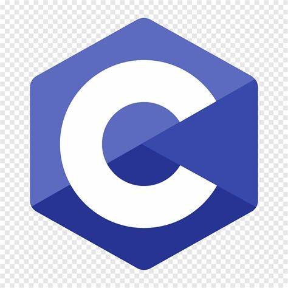

Sara Deepika
About
I am Nandikunta Sara Deepika.I completed my Graduation in BSc in Computer Science background from Rayalaseema University in Andhra Pradesh. Currently, I am working in Wipro Ltd company. My role is Queue engineer(supporting team) in EY project. But I want to see myself as a developer and so I am here learning Full Stack Developer Course. I got to know about Edureka Platform from Youtube Social media app. And I am feeling this is the excellent platform to boost my career.
*Microsoft Office
*C programming Language
*Java
*Python
My hobbies are Listening to music, Cooking and Watching TV.
Skills

Hobbies
Map
"
Social Media